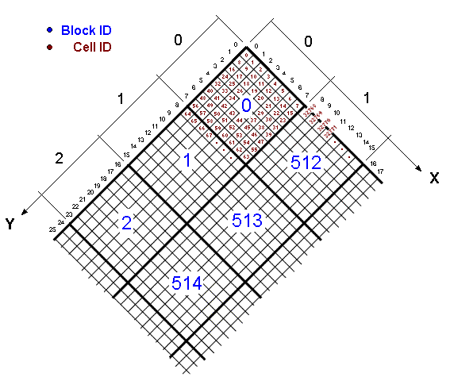

Ultimate
Melange Documentation
TABLE OF CONTENTS
Chapter 1 - The world of
Ultima
1.1 About cells,
blocks and the map
1.2 Static and
Raw Tiles
Chapter 2 - Structures and
Algorithms of UM
2.1 Sprites
2.2 The Stretch-O-Tilt
Algorithm
Not all of the documentation here is my
work, rather I try to collect all corresponding data, that may be interesting
for Ultimate Melange.
All file formats are either from Alazene's
UOInside or from the UOX source.
"... and what is the
use of a book," thought Alice, "without pictures or conversations?"
- Alice's Adventures
in Wonderland
However most pictures are drawn by
myself. (All done with paintbrush, THE drawing program..(except rotating
and the gif export were done with paint shop)
Chapter
1 - The world of Ultima
1.1 About cells,
blocks and the map
"..and yet it still moves'"
The world is build by a single continuous
map, divided into cells. The world is 6144 cells width and 4096 cells height,
resulting in a total of 25.165.824 cells. (Against Galileo's theories it
is proven the world of Ultima is flat, doesn't rotate and has no year cycle
at all ;o)
As you can see dungeon and the second age
are included on the right edge of it, if you "enter" a dungeon you are
simply teleported to this spot. For the client there are no levels or different
worlds, just this one large map. (However on OSI it's duplicated as the
worlds of Delucia and Felluca).
The cells are grouped into blocks of 8x8
size, out of some reason. Maybe this is done to burst up file reading,
so the server and the client can load all interesting parts of a map at
once, reducing the necessary. file seeks.
The blocks are loaded from up to down,
then left to right. However the cells inside the blocks are loaded from
left to right then from up to down.
Each block is referenced by a ID that can
simply be calculated with: ID = X*512 + Y
Cell are located into the .mul file visualized
by this picture:
.
Getting the block of a cell is also very easy:
blockX = cellX / 8 and
blockY = cellY / 8
Calculating the cell ID directly from
it's X and Y values is somewhat complicated, and not directly necessary,
since the block offset in the resource file is known and the relative offset
of the cell inside it's block.
However here is the formula:
ID = (trunc(X / 8) * 512 + trunc(Y / 8)) * 64 + (Y % 8) * 8 + (x
% 8)
Chapter
2 - Structures and Algorithms of UM
2.1 Sprites
I wish you wouldn't keep appearing and vanishing
so suddenly; you make one quite giddy!
All right,” said the Cat; and this time it vanished
quite slowly, beginning with the end of the tail, and ending with the grin,
which remained some time after the rest of it had gone.
Well! I've often seen a cat without a grin,” thought
Alice; “but a grin without a cat! It's the most curious thing I ever saw
in all my life!”
- Alice's
Adventures in Wonderland
It's no secret that sprites used to draw a
graphic on a screen, keeping the background intact.
Most times this is done by an AND put of
a mask, followed by a OR put of the graphic. So the new picture is first
stamped out of the background, and then filled in. However UM does not
use this technique.
Instead pixels are drawn on screen specified
by a "run map". Let's try to explain graphical:
For example a sprite that looks a lot like
the avatar:
The picture is divided into foreground (the
Avatar) and background (the white spaces).
To separate foreground and background look
at this picture:
The picture constantly switches foreground
and background. Now this information is stored into an array.
The first element holds the information
how background pixels are in the beginning. The second element then tells
how much foreground pixels are to be drawn, the third number tells again
about how much background to jump over and so on.
What about the line feeds?
In java images are stored in one dimensional
arrays. Yes, only one dimension not two. This has performance
reasons. For every image you have to know the pixelscan width, that means
how much pixels are between the lines that are stored into an array. The
pixelscan hasn't to be exactly the width picture, it can be bigger if convenient
(This fact is used in the graphical ring buffer algorithm.) So if the sprite
makes a linefeed it simply has to move on by the pixel scan, in background
level of course.
The linefeed from end to the line to start
of next line is:
linefeed = pixelscan - sprite.width;
In this example the first bytes of the run
array would look like this ( lf = linefeed ):
7, 6,
14 + lf, 6,
14 + lf, 6,
14 + lf, 6,
14 + lf, 6,
14 + lf, 6,
14 + lf, 6,
12 + lf, 10,
7 + lf, 16,
3 + lf, 18,
1 + lf, 20,
lf, 20,
lf, 20,
lf, 20,
lf, 20,
...
So the sprite drawing function gets the start
position for the sprite. It then skips the amount of pixels specified by
the first number of the "run array". Next it draws the amount of pixels
from the "data array" specified by the second number of the run array.
It then skips again and so on. The function ends as soon a length of 0
is found for foreground or background run. Only exception is the very first
element can be 0, telling the function that the sprite begins with foreground.
The graphic data itself is stored without
background information, this also save a lot of memory:
SImple drawn the avatar would look like
this:
2.2 The
Stretch-O-Tilt Algorithm
Before the mountains
were brought forth, or ever thou hadst formed the earth and the world,
even from everlasting to everlasting, thou art God. (Psalms 90:2)
Often people say that the current client is
2 dimensional. This not quite true, nor is it really false. In fact the
term 2.5 dimensional would fit. It knows of height of tiles, and creates
a 3d feeling of the world, with a fixed view of course, which is in fact
not a bad thing itself.
A already said each raw / map cell also
holds a height information. It's quite simple to recognize that higher
tiles are drawn further "up" the screen, and that lower tiles are drawn
further "down" screen.
To be exact it are 4 pixels per height
level.
This gives in example following view of
the world:
Now what to do with the gaps that were
created by shifting the tiles?
Since the world has no holes in it, they
have to be filled somehow,
and this leads to the "stretch-o-tilt"
algorithm:
Looks quite nice, or?
However there some mathematics to get to
this, first let's view the tiles in detail:
-
As you can see every tile is ALWAYS 44 pixels
width, no matter what.
-
Most of the tiles are still squares. (This
fact is important for accelerating graphics)
-
There are even some seldom cases where a tile
isn't a quadrangle no more. You can think of it as two triangles where
one can be stretched larger than the other.
-
The kind in which a tile is stretched depends
(only) on following parameters:
-
The height of the tile itself
-
The height of the tile "south" of it
-
The height of the tile "east" of it
-
The height of the tile "down" of it
Let's picture a worst case stretch-o-tilted
raw tile:
 |
hl ... height (stretching) of the
left triangle. |
| stl ... tilting of the left triangle.
(hl / 2 would be no tilting) |
| hr ... height (stretching) of the
right triangle. |
| str ... tilting of the right triangle.
(hl / 2 would be no tilting) |
Now finally the compressed knowledge,
the formulas:
thisTile.stl = abs(thisTile.height - southTile.height +
22);
thisTile.str = abs(thisTile.height - eastTile.height + 22);
thisTile.hl = abs(thisTile.stl + southTile.str);
thisTile.hr = abs(thisTile.str + eastTile.stl);
Now where is the downTile that was claimed
to be used before?
It is hidden in the southTile.str
and in the eastTile.str, since
to calculate these you need the southTile.eastTile.height (or the eastTile.southTile.height),
which is in fact in both cases the downTile.
A note about the absolute values: I'm not
quite sure about them if they are right, I simply put them in to be sure
to get valid sprites, and suddenly all was right.....
Another note: calculating these values
is referred in the UMelange-code as "preparing" a block/cell.
Visualizing how a tile is drawn:
When drawing the tile it could be really
handled as two seperate triangles, however this not done so yet. (this
is also a point of possible improvement)
Each traingle is first stretched to the
new height, and then this stretched triangle is tilted so the edge fits
the value specified by stl / str.
And how it is really done:
In fact to increase perfomance, a stretched
tile is first translated to a sprite and then draw onto screen. This has
the advantage that the stretch-o-tilt algorithm has to be calculated only
once for a tile.
The alorithmn doens't do a stretching and
then a tilting, this would be to slow.
It scans the destination square (width
* height) of the final tile, and calculates the stretch&tilt equations
backward looking which pixel of the original tile is hit. If a pixel is
hit outside of the square, it knows that it is background.
Here is also some space for improvement,
since the program scans all the background of the tile until it hits foreground
again. This could be removed by directly calculating the begin of foreground
using the normal forward equations.